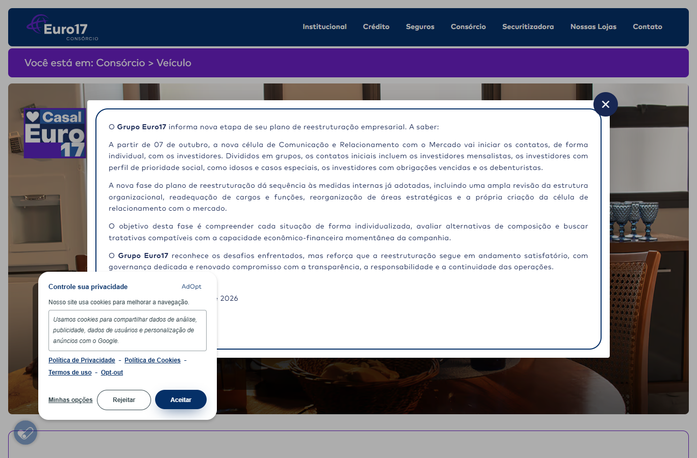
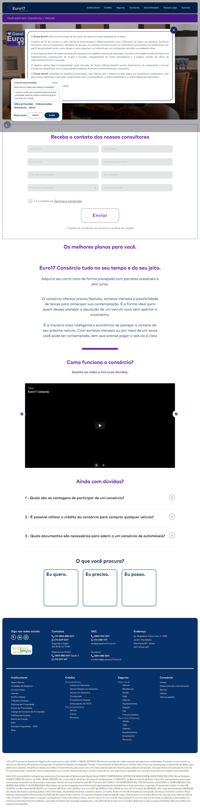

Sistema de Investigação de Marca e Identidade Online
https://euro17.com.br/consorcio/veiculo
Prioridade: MEDIUM · Cenário: B_AMBIGUOUS_COMMUNICATION · Revisão humana: PENDING
A página analisada (euro17.com.br/consorcio/veiculo) pertence à Euro17 Crédito, que se apresenta com identidade visual, logotipo, razão social e CNPJ próprios (28.924.327/0001-79). Não há uso do logotipo do Banco BV nem qualquer tentativa de se passar por canal oficial da instituição. A única referência à marca ocorre no aviso regulatório do rodapé, onde a empresa declara atuar como Correspondente Bancário de múltiplas instituições (BV Financeira S/A, FACTA Financeira S/A e BCREDI S/A). Trata-se, portanto, de menção comercial legítima sem indícios de uso indevido da marca. [Revisor: CONFIRM] Confirma-se a classificação REVIEW_REQUIRED (prioridade MEDIUM). Trata-se de site comercial de promotora de crédito e consórcios (Euro17 Crédito - CNPJ 28.924.327/0001-79) que se declara no rodapé como correspondente bancário e representante autorizada da BV Financeira S/A. Apesar de apresentar identidade visual própria e informar sua razão social e CNPJ no rodapé, o aviso regulatório menciona norma revogada (Resolução BCB nº 3.954/2011 em vez da Resolução CMN nº 4.935/2021) e não informa os dados da Ouvidoria do Banco BV, justificando a manutenção para revisão.


| Ref | Tipo | Local | Conteúdo |
|---|---|---|---|
| E-URL | domain | url | URL final: https://euro17.com.br/consorcio/veiculo (domínio: euro17.com.br) |
| E-COLLECT | network | collection | Status da coleta: OK; HTTP 200; ocorrências: network did not become idle (continuing) |
| E-DISC-001 | text | search_index | Índice de busca (grounding): euro17.com.br — **URL:** `https://euro17.com.br` | **Localização:** São Paulo/SP (CEP 01452-001) | **Uso da Marca:** Atua na captação de clientes para *"Veículo em Garantia"*, *"Veículo Pesado em Garantia"* e consórcios, declarando-se representante autorizada para ofertar serviços financeiros pela **"BV Financeira"** | Informa claramente a Razão Social (*EURO17 EMPRESARIAL GESTAO DE NEGOCIOS & INVESTIMENTOS LTDA*), o CNPJ (*28.924.327/0001-79*) e a condição de Correspondente Bancário, porém faz menção à antiga *Resolução nº 3.954/2011* do BCB (substituída pela Resolução CMN nº 4.935/2021) |
| E-SHOT-VIEWPORT | screenshot | viewport | evidence\C7efe732986\attempt-1\viewport.png (sha256 de6e6771a6023dab…) |
| E-SHOT-FULL | screenshot | page | evidence\C7efe732986\attempt-1\fullpage.png (sha256 716b9bd36817d699…) |
| E-TITLE | title | head | Conquiste o seu veículo com parcelas sem juros com o consórcio Euro17 - Veículo |
| E-META-1 | meta | head | description: Conquiste seu carro novo com o consórcio de veículo da Euro17. Temos os melhores planos para você. Fale já com um especialista. |
| E-META-2 | meta | head | og:site_name: Euro17 Crédito |
| E-META-3 | meta | head | og:title: Conquiste o seu veículo com parcelas sem juros com o consórcio Euro17 - Veículo |
| E-META-4 | meta | head | og:description: Conquiste seu carro novo com o consórcio de veículo da Euro17. Temos os melhores planos para você. Fale já com um especialista. |
| E-META-5 | meta | head | author: Sixchains |
| E-CANONICAL | meta | head | https://euro17.com.br/consorcio/veiculo |
| E-HEAD-1 | heading | page | Consórcio de Veículos |
| E-HEAD-2 | heading | page | Receba o contato dos nossos consultores |
| E-HEAD-3 | heading | page | Os melhores planos para você. |
| E-HEAD-4 | heading | page | Euro17 Consórcio tudo no seu tempo e do seu jeito. |
| E-HEAD-5 | heading | page | Como funciona o consórcio? |
| E-HEAD-6 | heading | page | Assista ao vídeo e tire suas dúvidas. |
| E-HEAD-7 | heading | page | Ainda com dúvidas? |
| E-HEAD-8 | heading | page | O que você procura? |
| E-HEAD-9 | heading | page | Controle sua privacidade |
| E-HDR | text | header | Institucional Crédito Seguros Consórcio Securitizadora Nossas Lojas Contato | Você está em: Consórcio > Veículo |
| E-FOLD | text | viewport (acima da dobra) | Institucional Crédito Seguros Consórcio Imóvel Maquinário da Linha Amarela Serviço Veículo Veículo Pesado Securitizadora Nossas lojas Contato Institucional Crédito Seguros Consórcio Securitizadora Nossas Lojas Contato Você está em: Consórcio > Veículo Consórcio de Veículos Sua realização pessoal no ritmo certo *Observe as condições do contrato da administradora do consórcio. Contrate com responsabilidade Assistir o episódio Controle sua privacidade AdOpt Nosso site usa cookies para melhorar a navegação. Usamos cookies para compartilhar dados de análise, publicidade, dados de usuários e personalização de anúncios com o Google. Política de Privacidade - Política de Cookies - Termos de uso - Opt-out Minhas opções Rejeitar Aceitar O Grupo Euro17 informa nova etapa de seu plano de reestruturação empresarial. A saber: A partir de 07 de outubro, a nova célula de Comunicação e Relacionamento com o Mercado vai iniciar os contatos, de forma individual, com os investidores. Divididos em grupos, os contatos iniciais incluem os investidores mensalistas, os investidores com perfil de prioridade social, como idosos e casos especiais, os investidores com obrigações vencidas e os debenturistas. A nova fase do plano de reestruturação dá sequência às medidas internas já adotadas, incluindo uma ampla revisão da estrutura organizacional, readequação de cargos e funções, reorganização de áreas estratégicas e a própria criação da célula de relacionamento com o mercado. O objetivo desta fase é compreender cada situação de forma individualizada, avaliar alternativas de composição e buscar tratativas compatíveis com a capacidade econômico-financeira momentânea da companhia. O Grupo Euro17 reconhece os desafios enfrentados, mas reforça que a reestruturação segue em andamento satisfatório, com governança dedicada e renovado compromisso com a transparência, a responsabilidade e a continuidade das operações. São Paulo, 29 de setembro de 2026 |
| E-FTR | text | footer | Siga nas redes sociais Contatos (11) 0800 888 0017 (11) 5229 0217 Segunda a Sexta das 8h30 às 17h30 Negocie sua Dívida: 0800 888 0017 Opção 5 (11) 5217 1617 SAC 0800 000 3517 (11) 5286 1717 sac@grupoeuro17.com.br Ouvidoria: 0800 888 3876 ouvidoria@grupoeuro17.com.br Endereço Av. Brigadeiro Faria Lima, nº 1.993 Jardim Paulistano São Paulo/SP - Brasil CEP 01452-001 Institucional Quem Somos Unidades de Negócios Compromisso Valores Conformidade Trabalhe Conosco Políticas de Privacidade Portal de Privacidade Código de Conduta do Fornecedor Políticas de Cookies Alerta de Fraude ESG Dúvidas Frequentes – FAQ Blog Crédito Empréstimos Imóvel em Garantia Veículo Pesado em Garantia Veículo em Garantia Consignado Empréstimo Pessoal Antecipação de FGTS Financiamentos Veículo Imóvel Parceiros Seguros Para Você Veículo Residencial Saúde Vida Odonto Equipamentos Viagem Pet Fiança Locatícia Para Sua Empresa Saúde Vida Odonto Equipamentos Empresarial Parceiros Consórcio Imóvel Maquinário da Linha Amarela Serviço Veículo Veículo pesado A Euro17 Empresarial Gestão de Negócios & Investimentos Ltda. (CNPJ nº 28.924.327/0001-79) oferece soluções de crédito pessoal nas seguintes modalidades: Empréstimo com Imóvel ou Veículo em Garantia, Empréstimo Consignado, Empréstimo Pessoal e Consignado Privado, Financiamento de Bens Móveis e Imóveis. Além do serviço de pesquisa e tratamento de dados para abertura e cadastro. Simplifica o acesso ao crédito e financiamento, pois conta com uma rede especializada de parceiros para cada tipo de solução. A equipe da Euro17 participa do início ao fim das operações, mantendo uma conexão direta com o cliente. Garantindo assim a melhor experiência, com segurança e agilidade, por meio de um atendimento digital e personalizado. A Euro17 é uma plataforma digital que atua como Correspondente Bancário sob Razão Social EURO17 EMPRESARIAL GESTAO DE NEGOCIOS & INVESTIMENTOS LTDA, Nome Fantasia: EURO17 CRÉDITO inscrito no CNPJ: 28.924.327/0001-79., cumprindo as diretrize |
| E-NAV | nav | header | Imóvel <https://euro17.com.br/consorcio/imovel> | Maquinário da Linha Amarela <https://euro17.com.br/consorcio/maquinario-linha-amarela> | Serviço <https://euro17.com.br/consorcio/servico> | Veículo <https://euro17.com.br/consorcio/veiculo> | Veículo Pesado <https://euro17.com.br/consorcio/veiculo-pesado> | Securitizadora <https://eurosecuritizadora.com.br/> | Nossas lojas <https://euro17.com.br/nossas-lojas> | Contato <https://euro17.com.br/contato> | <https://euro17.com.br/> | Securitizadora <https://eurosecuritizadora.com.br/> | Nossas Lojas <https://euro17.com.br/nossas-lojas> | Contato <https://euro17.com.br/contato> |
| E-CTA-1 | cta | page | Enviar |
| E-CTA-2 | cta | page | 0 |
| E-CTA-3 | cta | page | 1 |
| E-CTA-4 | cta | page | Minhas opções |
| E-CTA-5 | cta | page | Rejeitar |
| E-CTA-6 | cta | page | Aceitar |
| E-CTA-7 | cta | page | fechar o pop-up |
| E-CONTACT-1 | contact | footer | Facebook <https://www.facebook.com/Euro17-121608142732780> |
| E-CONTACT-2 | contact | footer | Instagram <https://www.instagram.com/grupoeuro17/> |
| E-CONTACT-3 | contact | footer | (11) 0800 888 0017 <tel:5508008880017> |
| E-CONTACT-4 | contact | footer | (11) 5229 0217 <https://wa.me/551152290217> |
| E-CONTACT-5 | contact | footer | 0800 888 0017 <tel:5508008880017> |
| E-CONTACT-6 | contact | footer | 0800 000 3517 <tel:08000003517> |
| E-CONTACT-7 | contact | footer | (11) 5286 1717 <https://wa.me/551152861717> |
| E-CONTACT-8 | contact | footer | sac@grupoeuro17.com.br <mailto:sac@grupoeuro17.com.br> |
| E-CONTACT-9 | contact | footer | 0800 888 3876 <tel:08008883876> |
| E-CONTACT-10 | contact | footer | ouvidoria@grupoeuro17.com.br <mailto:ouvidoria@grupoeuro17.com.br> |
| E-IMG-1 | image | header (acima da dobra) | imagem alt='Logotipo' src= (140x51, acima da dobra) |
| E-IMG-2 | image | header (acima da dobra) | imagem alt='Logotipo' src=https://euro17.com.br/_nuxt/logotipo.DQZpA0fV.svg (140x51, acima da dobra) |
| E-IMG-3 | image | page (acima da dobra) | imagem alt='logo grupo euro17' src=https://euro17.com.br/LogoGrupoEuro17.png (167x48, acima da dobra) |
| E-TXT-001 | text | page | SAC |
| E-TXT-002 | text | page | sac@grupoeuro17.com.br |
| E-TXT-003 | text | page | Ouvidoria: |
| E-TXT-004 | text | page | ouvidoria@grupoeuro17.com.br |
| E-TXT-005 | text | page | Endereço |
| E-TXT-006 | text | page | CEP 01452-001 |
| E-TXT-007 | text | page | Parceiros |
| E-TXT-008 | text | page | Parceiros |
| E-TXT-009 | text | page | A Euro17 Empresarial Gestão de Negócios & Investimentos Ltda. (CNPJ nº 28.924.327/0001-79) oferece soluções de crédito pessoal nas seguintes modalidades: Empréstimo com Imóvel ou Veículo em Garantia, Empréstimo Consignado, Empréstimo Pessoal e Consignado Privado, Financiamento de Bens Móveis e Imóveis. Além do serviço de pesquisa e tratamento de dados para abertura e cadastro. Simplifica o acesso |
| E-TXT-010 | text | page | ao crédito e financiamento, pois conta com uma rede especializada de parceiros para cada tipo de solução. A equipe da Euro17 participa do início ao fim das operações, mantendo uma conexão direta com o cliente. Garantindo assim a melhor experiência, com segurança e agilidade, por meio de um atendimento digital e personalizado. |
| E-TXT-011 | text | page | A Euro17 é uma plataforma digital que atua como Correspondente Bancário sob Razão Social EURO17 EMPRESARIAL GESTAO DE NEGOCIOS & INVESTIMENTOS LTDA, Nome Fantasia: EURO17 CRÉDITO inscrito no CNPJ: 28.924.327/0001-79., cumprindo as diretrizes do artigo 2º, da Resolução nº 3.954/2011, do Banco Central do Brasil. A Euro17 é representante autorizada para realizar empréstimos de quaisquer naturezas, |
| E-TXT-012 | text | page | ofertar serviços financeiros pelo BV Financeira S/A (CNPJ nº 01.149.953/0003-40), FACTA Financeira S/A (CNPJ nº 15.581.638/0001-30), BCREDI S/A (CNPJ nº 31.105.806/0001-78), prestar serviço de recepção e encaminhamento de propostas de empréstimos e financiamentos, a exemplo: Proposta de Crédito, no valor R$ 10.097,31, em 84 meses de R$ 263,00, com taxa de 1,80 % ao mês e 24.18 ao ano, com CET de |
| E-TXT-013 | text | page | 1,89% ao mês e 25.6% ao ano., IOF (Tributos) de R$336,50. Valor total das prestações R$263,00. Os valores das taxas e parcelas podem sofrer alterações, dependendo de prazo, convênio e banco. Consulte. Prazo mínimo de empréstimo consignado: 12 meses. Consultar convênio. Prazo máximo: Aposentados e Pensionistas do INSS até 84 meses. Prazo máximo: Funcionários Públicos Federais até 96 meses. Taxa de |
| Dimensão | Sinal | Achado | Refs |
|---|---|---|---|
| VISUAL_IDENTITY | LEGITIMATE | A página utiliza exclusivamente a identidade visual própria do Grupo Euro17 (tons de azul escuro e roxo, logotipo próprio 'Euro17 Consórcio'), sem qualquer imitação visual do Banco BV. | E-SHOT-VIEWPORT E-SHOT-FULL E-IMG-2 E-IMG-3 |
| DECLARED_COMMERCIAL_IDENTITY | LEGITIMATE | A empresa se identifica claramente como EURO17 EMPRESARIAL GESTAO DE NEGOCIOS & INVESTIMENTOS LTDA (Nome Fantasia: EURO17 CRÉDITO), inscrita no CNPJ 28.924.327/0001-79. | E-FTR E-TXT-009 E-TXT-011 |
| CORRESPONDENT_TRANSPARENCY | LEGITIMATE | Declara expressamente no rodapé que atua como Correspondente Bancário e lista as instituições financeiras para as quais atua (BV Financeira S/A, FACTA Financeira S/A e BCREDI S/A), embora cite a antiga Resolução nº 3.954/2011. | E-FTR E-TXT-011 E-TXT-012 |
| INSTITUTIONAL_LANGUAGE | LEGITIMATE | A comunicação é feita inteiramente em nome da própria Euro17, sem se passar pelo Banco BV. | E-TITLE E-HEAD-4 E-FOLD |
| LOGO_USAGE | LEGITIMATE | Não há uso do logotipo do Banco BV ou da BV Financeira na página inspecionada; há apenas menção textual no texto legal do rodapé. | E-SHOT-FULL E-TXT-012 |
| SERVICE_JOURNEY | LEGITIMATE | O formulário de captação refere-se à consultoria de consórcio da própria Euro17 ('Receba o contato dos nossos consultores'), sem induzir o usuário a acreditar que está contratando diretamente em um canal oficial do Banco BV. | E-HEAD-2 E-SHOT-FULL |
| CONTACT_CHANNELS | LEGITIMATE | Os canais de contato, SAC, Ouvidoria e endereço físico são claramente identificados como pertencentes ao Grupo Euro17 (@grupoeuro17.com.br). | E-FTR E-CONTACT-1 E-CONTACT-8 E-CONTACT-10 |
| CONSUMER_CONFUSION | LEGITIMATE | Não há risco de confusão para o consumidor: a marca BV Financeira é citada apenas no disclaimer regulatório de correspondente bancário no rodapé, junto a outras instituições parceiras. | E-TXT-011 E-TXT-012 E-SHOT-FULL |
A página analisada (euro17.com.br/consorcio/veiculo) pertence à Euro17 Crédito, que se apresenta com identidade visual, logotipo, razão social e CNPJ próprios (28.924.327/0001-79). Não há uso do logotipo do Banco BV nem qualquer tentativa de se passar por canal oficial da instituição. A única referência à marca ocorre no aviso regulatório do rodapé, onde a empresa declara atuar como Correspondente Bancário de múltiplas instituições (BV Financeira S/A, FACTA Financeira S/A e BCREDI S/A). Trata-se, portanto, de menção comercial legítima sem indícios de uso indevido da marca.
A página declara atuação como correspondente/prestador e identifica a empresa, mas não houve confirmação em cadastro autorizado.
| Tipo | Valor | Ref | Contexto |
|---|---|---|---|
| domain | euro17.com.br | E-URL | |
| cnpj | 28.924.327/0001-79 | E-DISC-001 | anceira"** | Informa claramente a Razão Social (*EURO17 EMPRESARIAL GESTAO DE NEGOCIOS & INVESTIMENTOS LTDA*), o CNPJ (*28.924.327/0001-79 |
| cnpj | 01.149.953/0003-40 | E-TXT-012 | ofertar serviços financeiros pelo BV Financeira S/A (CNPJ nº 01.149.953/0003-40 |
| cnpj | 15.581.638/0001-30 | E-TXT-012 | ), FACTA Financeira S/A (CNPJ nº 15.581.638/0001-30 |
| cnpj | 31.105.806/0001-78 | E-TXT-012 | ), BCREDI S/A (CNPJ nº 31.105.806/0001-78 |
| legal_name | EURO17 EMPRESARIAL GESTAO DE NEGOCIOS & INVESTIMENTOS LTDA | E-DISC-001 | |
| trade_name | EURO17 CRÉDITO inscrito no CNPJ: 28.924.327/0001-79., cumprindo as diretrize | E-FTR | |
| legal_name | A Euro17 Empresarial Gestão de Negócios & Investimentos Ltda | E-FTR | |
| legal_name | Razão Social EURO17 EMPRESARIAL GESTAO DE NEGOCIOS & INVESTIMENTOS LTDA | E-FTR | |
| sac@grupoeuro17.com.br | E-FTR | ||
| ouvidoria@grupoeuro17.com.br | E-FTR | ||
| social_profile | https://www.facebook.com/Euro17-121608142732780 | E-CONTACT-1 | |
| social_profile | https://www.instagram.com/grupoeuro17/ | E-CONTACT-2 | |
| trade_name | EURO17 CRÉDITO inscrito no CNPJ: 28.924.327/0001-79., cumprindo as diretrizes do artigo 2º, da Resol | E-TXT-011 | |
| institution_name_displayed | BV Financeira S/A | E-TXT-012 | |
| legal_name | FACTA Financeira S/A | E-TXT-012 | |
| legal_name | BCREDI S/A | E-TXT-012 | |
| trade_name | Euro17 Crédito | E-META-2 | |
| phone | 0800 888 0017 | E-FTR | |
| phone | (11) 5229 0217 | E-FTR | |
| phone | (11) 5217 1617 | E-FTR | |
| phone | 0800 000 3517 | E-FTR | |
| phone | (11) 5286 1717 | E-FTR | |
| phone | 0800 888 3876 | E-FTR | |
| (11) 5229 0217 <https://wa.me/551152290217> | E-CONTACT-4 | ||
| (11) 5286 1717 <https://wa.me/551152861717> | E-CONTACT-7 | ||
| correspondent_declaration | Correspondente Bancário | E-FTR | Siga nas redes sociais Contatos (11) 0800 888 0017 (11) 5229 0217 Segunda a Sexta das 8h30 às 17h30 Negocie sua Dívida: 0800 888 0017 Opção 5 (11) 5217 1617 SAC 0800 000 3517 (11) 5286 1717 sac@grupoe |
| partnership_declaration | autorizada | E-DISC-001 | **Uso da Marca:** Atua na captação de clientes para *"Veículo em Garantia"*, *"Veículo Pesado em Garantia"* e consórcios, declarando-se representante autorizada para ofertar serviços financeiros pela |
Mapeamento indicativo para apoio à auditoria. Não constitui conclusão regulatória; a decisão definitiva pertence à auditoria.
Fonte: NORMATIVE
Art. 14. O contrato de correspondente deve estabelecer: [...] II - vedação à utilização, pelo contratado, de logomarca ou de outros atributos que sejam similares aos adotados pela instituição contratante em suas agências, postos de atendimento, sítio eletrônico na internet, aplicativo ou outras plataformas de comunicação em rede;
Evidência observada: E-IMG-2 E-IMG-3 E-SHOT-FULL E-SHOT-VIEWPORT E-TXT-012
Fonte: NORMATIVE
Art. 14. O contrato de correspondente deve estabelecer: [...] III - divulgação ao público, pelo contratado, de sua condição de prestador de serviços à instituição contratante, identificada pelo nome com que é conhecida no mercado, com descrição dos produtos e serviços oferecidos e canais de contato da instituição contratante, inclusive de sua ouvidoria, em local visível, em destaque e em formato legível, por meio de: a) sítio eletrônico do correspondente na internet, acessível na página inicial; b) aplicativo e outras plataformas de comunicação em rede do correspondente; [...]
Hipótese: Há declaração da condição de correspondente/prestador, mas outros elementos da página (apresentação da marca) podem contradizê-la ou reduzir seu efeito (destaque, legibilidade e identificação da contratante a verificar). Aplicável somente se confirmado o vínculo de correspondente.
Evidência observada: E-DISC-001 E-TXT-011
Informação faltante:
Fonte: NORMATIVE
Art. 3º O correspondente atua por conta e sob as diretrizes da instituição contratante, que assume inteira responsabilidade pelo atendimento prestado aos clientes e usuários por meio do contratado.
Evidência observada: E-CONTACT-1 E-CONTACT-10 E-CONTACT-8 E-FTR E-HEAD-2 E-SHOT-FULL
Limitações: requisitos contratuais/internos não fornecidos: mapeamento limitado ao texto normativo
Decisão: CONFIRM → REVIEW_REQUIRED / MEDIUM
Confirma-se a classificação REVIEW_REQUIRED (prioridade MEDIUM). Trata-se de site comercial de promotora de crédito e consórcios (Euro17 Crédito - CNPJ 28.924.327/0001-79) que se declara no rodapé como correspondente bancário e representante autorizada da BV Financeira S/A. Apesar de apresentar identidade visual própria e informar sua razão social e CNPJ no rodapé, o aviso regulatório menciona norma revogada (Resolução BCB nº 3.954/2011 em vez da Resolução CMN nº 4.935/2021) e não informa os dados da Ouvidoria do Banco BV, justificando a manutenção para revisão.
| Tema | Severidade | Questionamento | Refs |
|---|---|---|---|
| Identificação regulatória de Correspondente Bancário | MEDIUM | A página pertence a uma promotora de crédito/correspondente bancário (Euro17 Crédito) que declara no rodapé ser representante autorizada para ofertar serviços financeiros pela BV Financeira S/A, porém faz referência à revogada Resolução nº 3.954/2011 (substituída pela Resolução CMN nº 4.935/2021) e informa apenas sua ouvidoria própria, sem exibir a ouvidoria da instituição contratante nem manter a identificação de correspondente em destaque na área visível inicial. | E-DISC-001 E-FTR E-TXT-011 E-TXT-012 E-SHOT-FULL |
| over_interpretation | MEDIUM | Todos os indícios de confusão têm força baixa. | E-TXT-011 E-DISC-001 |
| contradictory_evidence | LOW | Coexistem declaração de correspondente e indícios de confusão. | E-FTR E-TXT-011 |
| Fonte | Consulta / hipótese | URL original | Título / trecho |
|---|---|---|---|
| grounding | Objetivo: Estabelecimentos (loja de veículos em São Paulo) que divulgam financiamento da marca.
Execute no Google Search as seguintes consultas (dorks):
- loja de veículos "São Paulo" ("Banco BV" OR "bv financeira") (financiamento OR correspondente) -site:bv.com.br -site:bancobv.com.br -site:bvfinanceira.com.br -site:bvinvestimentos.com.br -site:napista.com.br -site:bvopen.com.br -site:meufinanciamentosolar.com.br -site:votorantim.com.br -site:vam.com.br -site:reclameaqui.com.br -site:jusbrasil.com.br -site:jus.br -site:weebly.com -site:site123.me
Liste de forma abrangente as páginas públicas encontradas (até 12 resultados distintos), informando para cada uma o nome do estabelecimento/perfil, a URL e como a marca é utilizada (destaque visual, título, feirão, simulador, redes sociais e se há ou não identificação clara de CNPJ e condição de correspondente bancário). H5-establishment:loja de veículos:São Paulo | https://euro17.com.br/consorcio/veiculo | euro17.com.br **URL:** `https://euro17.com.br` | **Localização:** São Paulo/SP (CEP 01452-001) | **Uso da Marca:** Atua na captação de clientes para *"Veículo em Garantia"*, *"Veículo Pesado em Garantia"* e consórcios, declarando-se representante autorizada para ofertar serviços financeiros pela **"BV Financeira"** | Informa claramente a Razão Social (*EURO17 EMPRESARIAL GESTAO DE NEGOCIOS & INVESTIMENTOS LTDA*), o CNPJ (*28.924.327/0001-79*) e a condição de Correspondente Bancário, porém faz menção à antiga *Resolução nº 3.954/2011* do BCB (substituída pela Resolução CMN nº 4.935/2021) |
Original: https://euro17.com.br/consorcio/veiculo
Final: https://euro17.com.br/consorcio/veiculo
| Artefato | Caminho | SHA-256 | Bytes |
|---|---|---|---|
| screenshot_viewport | evidence\C7efe732986\attempt-1\viewport.png | de6e6771a6023dab5ba84fe66653a8e6c6efe73cd941579f512781071088c37a | 354470 |
| screenshot_full | evidence\C7efe732986\attempt-1\fullpage.png | 716b9bd36817d699b466c8c411b810dd9a102290b4c4dc25b47cab46e1d31f13 | 800972 |
| html | evidence\C7efe732986\attempt-1\page.html.txt | 0b55ded404635d44fb0928fa256d71c75a4c175f280ed413ccc7dcc1b9c044dc | 1425722 |
| text | evidence\C7efe732986\attempt-1\text.txt | 7f00ca812b06f88ef5c591c4f617ba6e1ad72cb18265d86568d1fb1d6a2fc821 | 6687 |
| page_data | evidence\C7efe732986\attempt-1\page.json | 83ba9df3b8d99b99ea382cdc32c9fd910807eafb83ec6185ecde1729d083a620 | 29389 |
| Quando | De | Para | Nota |
|---|---|---|---|
| 2026-11-23T14:17:58+00:00 | DISCOVERED | QUEUED | prioritised (score 1.0) |
| 2026-11-23T14:49:35+00:00 | QUEUED | COLLECTING | |
| 2026-11-23T14:49:58+00:00 | COLLECTING | COLLECTED | |
| 2026-11-23T14:49:58+00:00 | COLLECTED | ANALYZING | |
| 2026-11-23T14:50:38+00:00 | ANALYZING | REVIEWING | |
| 2026-11-23T14:50:55+00:00 | REVIEWING | COMPLETED |